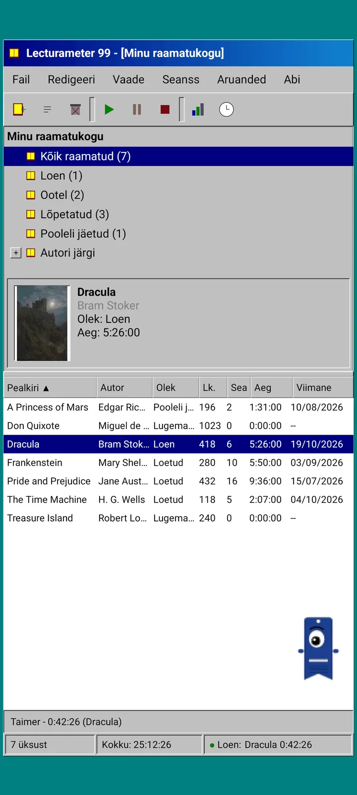
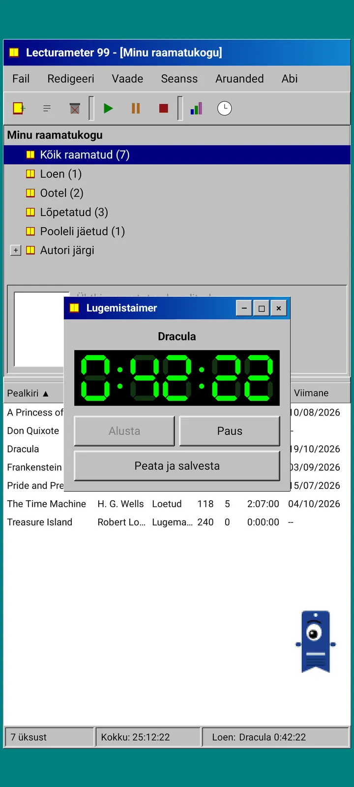
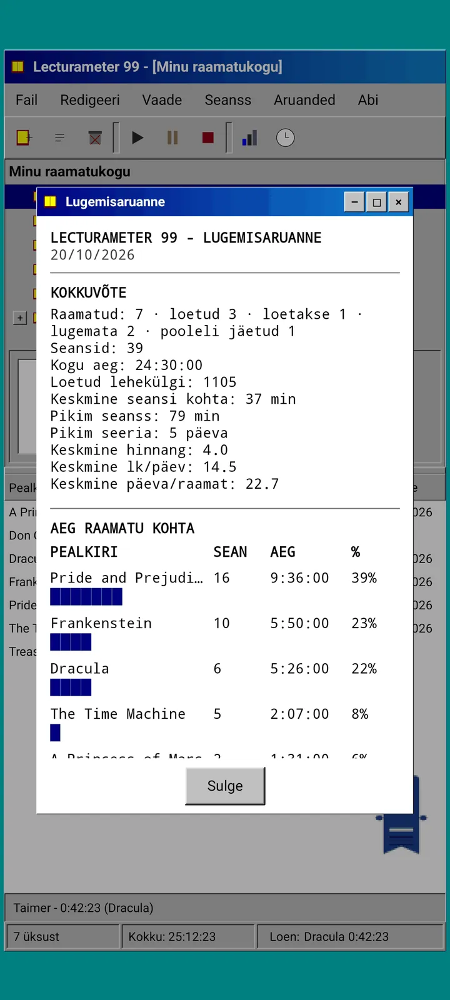
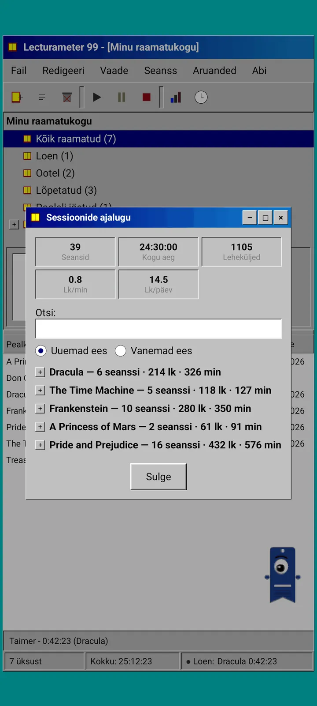
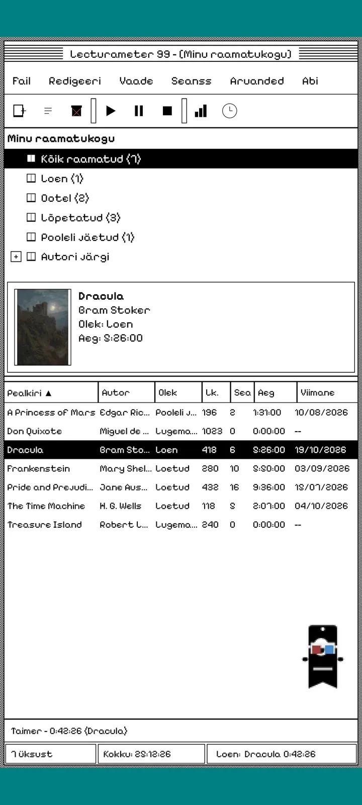
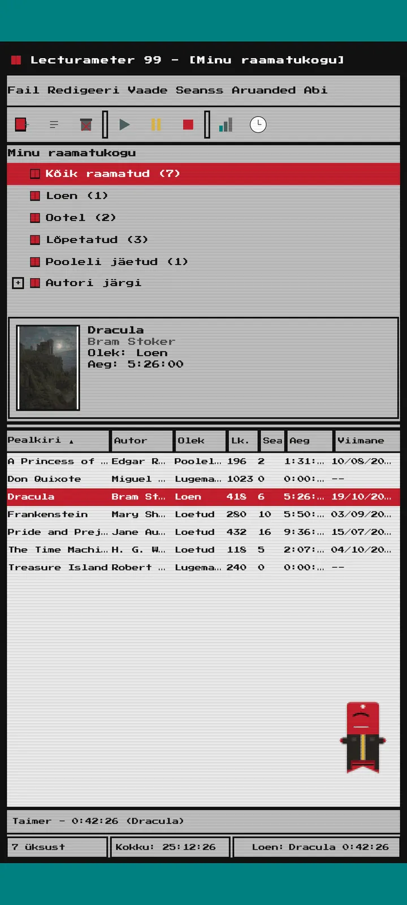
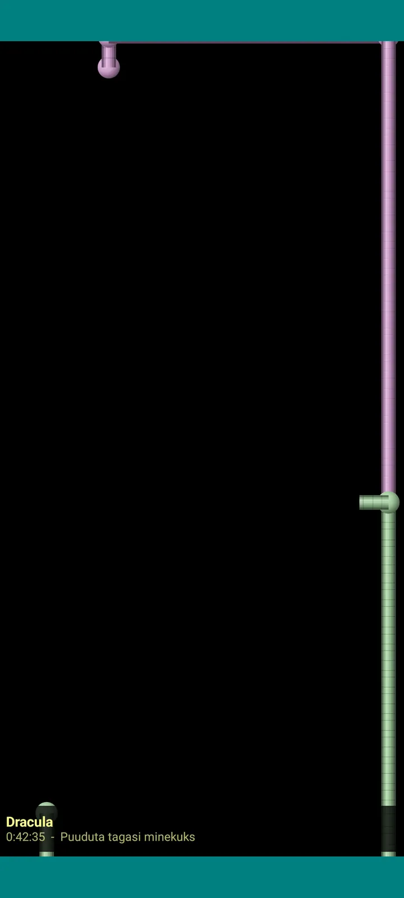

Lecturameter 1999
Lecturameter, nagu oleksid selle 1999. aastal CD-ROM-ilt paigaldanud. Rakenduse alternatiivne klient akende, menüüde ja tabelitega, mis avab sinu päris varukoopiad.

Mis see on
Üheksakümnendate lõpu lauaarvutiprogramm sinu telefonis. Üks aken sinakasrohelisel töölaual, menüüriba, tööriistariba, kaustapuu, tihe tabel ja olekuriba.
- Raamatukogu puu: kõik raamatud, loen, ootel, lõpetatud, loobutud ja autori järgi
- Tabel pealkirja, autori, oleku, lehekülgede, seansside, aja ja viimase lugemisega. Sortimiseks puuduta veeru päist
- Päris raamatuotsing sama kataloogiga, mida kasutab Lecturameter
- Impordib ja ekspordib Lecturameteri varukoopiat ja Goodreadsi CSV-d. Sinu andmed liiguvad sisse ja välja ilma midagi kaotamata

Miks see olemas on
Eksperiment: ehitada Lecturameteri idee nullist üles täiesti teistsuguste disainipõhimõtete järgi, päris rakendust puutumata. Kõigist ümbertõlgendustest meeldis mulle kõige rohkem 1999. aasta oma, nii et viisin selle lõbusa harjutusena lõpuni ja tegin sellest täieliku kliendi. See on meelega lihtsam kui Lecturameter: see on eksperiment ja põhimõtteliselt seda edasi ei arendata.
- Taimer ujuvas aknas rohelise LCD-ekraaniga. Seda saab liigutada, tegumiribale minimeerida ja see jätkab olekuribal lugemist
- Peatamisel küsib seansi salvestamise dialoog sinu lehekülgi ja arvutab tempo, täpselt nagu Lecturameter
- Salvestatud seansid on Lecturameteri seansid: need jõuavad tagasi moodsasse rakendusse, kui ekspordid Lecturameter 1999 varukoopia ja impordid selle Lecturameterisse.

Lugemisaruanne
Statistika on prinditud aruanne: kokkuvõte, aeg raamatu kohta plokkribadega, kiirus lehekülgedes päevas, märkidest joonistatud aasta kalender ja viimased seitse päeva.

Seansside ajalugu
Seansid on rühmitatud raamatute kaupa pluss- ja miinusmärkidega puusse, ülal viis näitajat: seansid, aeg kokku, leheküljed, lehekülgi minutis ja lehekülgi päevas.

Salvesta seanss
Kuupäev, minutid, esimene ja viimane lehekülg, kommentaar. Kokkuvõte arvutab kirjutamise ajal leheküljed ja tempo. Kui jõuad viimasele leheküljele, küsitakse, kas lõpetasid raamatu.

Pagi 99
Pagi rändab samuti 1999. aastasse: pikslitest ja ekraanil vabalt liikuv nagu tolle aja kontoriabilised. Saad teda lohistada, puudutamisel ütleb ta midagi ja näitab nõuandeid kollastes mullides.
Teemad
Klassikaline 98 on tasuta ja vaikimisi. Pakett lisab veel kuus, igaühel oma taust ja oma helid.

Vali see menüüst Vaade
Vaade, Teema... avab akna seitsme teemaga. Muutus jõuab korraga igasse aknasse, taimerisse ja Pagini.
- Klassikaline 98, tasuta ja vaikimisi: hallid aknad, tumesinised tiitliribad ja sinakasroheline töölaud
- Teemapakett: 1984, Kummikomm, Mälu, Tornid, Tuum ja 8-bitine
- Iga teemaga tuleb oma töölaua taust ja oma helid puudutuste, akende ja taimeri jaoks
- Vaade, Teema helid lülitab helid välja, kui loed vaikuses

Klassikaline 98
Hallid aknad, tumesinised tiitliribad ja sinakasroheline töölaud. Tasuta, sellega rakendus avaneb.

1984
Ühebitine mustvalge töölaud punktmustrite ja kandiliste akendega.

Kummikomm
Läbikumav värviline plastik, ümarad nupud ja triibud taustal.

Mälu
Üheksakümnendate plaadikonsooli menüüd tumesinistes toonides.

Tornid
Veel üks üheksakümnendate plaadikonsool, öösinine helesiniste joontega.

Tuum
Must-roheline konsool, nagu ekraan, mis kunagi välja ei lülitu.

8-bitine
Paksud pikslid, vähe värve ja klotsilised tähed.

Proovi enne maksmist
Puuduta lukustatud teemat ja kogu rakendus vahetub selle peale. Kui sulged ostmata, tuleb eelmine teema tagasi.
Ekraanisäästjad
Need ilmuvad ainult siis, kui taimer töötab ja sa telefoni ei puuduta. Need ootavad 1, 3 või 5 minutit või mitte kunagi. Üks puudutus viib tagasi ja taimer jätkab lugemist.

Lendavad raamatud
Pikslitest raamatud, mis lendavad kaasi lehvitades üle musta ekraani.

Täheväli
Paljude tähestike tähed triivivad mööda nagu tähistaevas.

Lehekülgede torud
Lehekülgedest torud, mis joonistuvad ise, kuni ekraan saab täis.

Põrkav Pagi
Pagi põrkab ekraani servadelt tagasi.

Lugemiskell
Seansi aeg suurte LCD-numbritega.

Kostüümid Pagile
Kaheksa kostüümi Pagi 99-le. Vali need menüüst Vaade, Pagi kostüüm..., ja saad neid enne maksmist proovida.
- Kassetimängija
- Tagurpidi nokamüts
- 3D-prillid
- Neoonpäikeseprillid
- Diskett käes
- Nahktagi
- Taskulemmik
- Papist kroon
Pood
Rakendus on lugemise jälgimiseks tasuta ja täielik. Ostetav muudab ainult välimust.
Kogu rakendus, ilma ajapiiranguta.
- Raamatukogu, otsing, taimer ja seansid
- Lugemisaruanne ja seansside ajalugu
- Lecturameteri varukoopia ja Goodreadsi CSV, sisse ja välja
- Teema Klassikaline 98 ja Pagi 99
- Kontota ja reklaamideta
Ühekordsed maksed, tellimusteta.
- Teemapakett, €3.49: 6 teemat tausta ja helidega ning ekraanisäästjad
- Ekraanisäästjad, €1.99: kõik 5 ekraanisäästjat
- Pagi kostüümid, €1.99: kõik 8 kostüümi
- Kogu 1999, €4.49: teemad, ekraanisäästjad ja kostüümid
Valikuline jootraha menüüs Abi, kui tahad mulle kohvi välja teha.
Teemasid ja kostüüme saab enne maksmist otse proovida. Kui sulged ostmata, tuleb tagasi see, mis sul enne oli.
Mis on Lecturameteriga võrreldes teisiti
Sama mis Lecturameteris
- Samad andmed: raamatud, seansid, olekud, hinnangud ja märkmed. Varukoopiafail on mõlemas rakenduses sama.
- Raamatuotsing pealkirja või autori järgi.
- Päris taimer: see jätkab lugemist taustal ja isegi siis, kui rakenduse sulged.
- Kontota, reklaamideta, ühenduseta, välja arvatud raamatute otsimiseks.
- Samad keeled mis Lecturameteris.
Ainult 1999 väljaandes
- 1999. aasta lauaarvuti liides. Mitte mingit Materiali.
- Päris aknad: saad neid lohistada, minimeerida ja ristikesega sulgeda.
- Tekstiline lugemisaruanne märkidest joonistatud kalendriga.
- Kontekstimenüü pika vajutusega ja klaviatuuri otseteed, kui ühendad klaviatuuri.
- Pikslitest Pagi 99 nõuandemullidega.
- Valikulised teemad oma tausta ja helidega, ekraanisäästjad taimeri töötamise ajal ja kostüümid Pagile.
Mis on meelega välja jäetud
- Pro-d ega tellimust pole. Lugemise jälgimine on täiesti tasuta, pood müüb ainult välimust.
- Pole väljakutseid, bingosid, aasta Wrappedit ega vidinaid.
- Pole süvenenud seanssi, taustahelisid ega Google Drive'i varukoopiat. Varukoopia salvestatakse failina.
Suletud testimine
Lecturameter 1999 on Google Plays suletud testimisel. iOS tuleb hiljem, kuupäev on veel teadmata.
- Liitu grupiga groups.google.com/g/lecturameter-1999
- Registreeru testijaks aadressil play.google.com/apps/testing/com.lecturameter.r1999
- Paigalda see aadressilt Google Play
Google Plays suletud testimisel, iOS hiljem. Loe blogipostitust , et näha, kust see pärit on ja mida oodata.